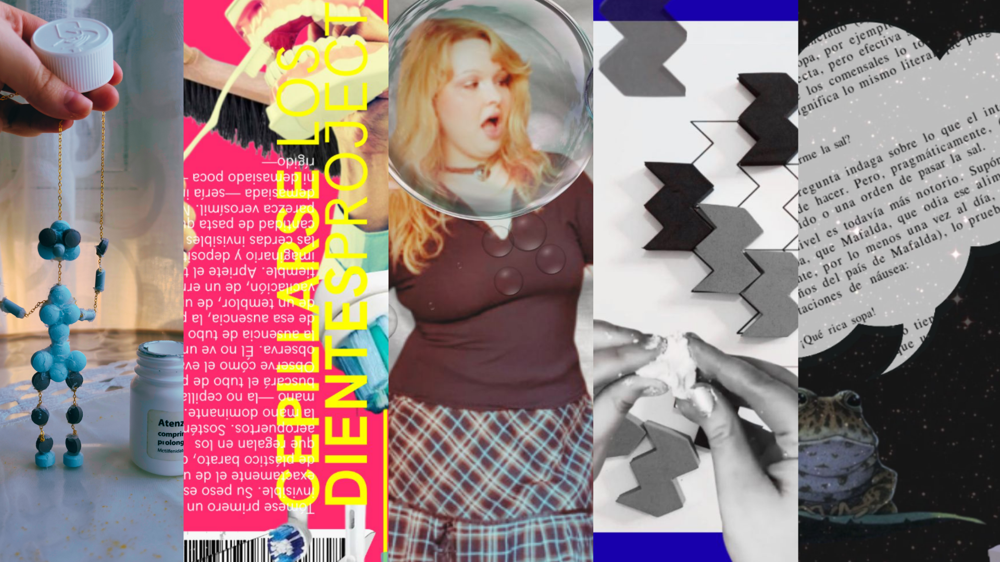

TEAtraviesa

Con TEAtraviesa se da nombre a una creación artística sobre estéticas de la discapacidad que encuentra sentido de ser combinando diversos formatos: art.net, collage, videoarte... No es resultado de unos minutos de prueba y error con la combinación del acrónimo Trastorno del Espectro Autista junto a cualquier otra palabra. Es, de hecho, muy consciente de sí mismo, pues actúa como juego lingüístico que privilegia el cuerpo (como se tiene que luchar dentro de un orden capacitista que niega la agencia de las personas neurodivergentes), ya que atravesar es literalmente: "tr. Pasar un cuerpo penetrándolo de parte a parte".
Y es que la experiencia de ser un sujeto autista en el mundo nos atraviesa a los neurodivergentes porque nos constituye como sujetos y nos penetra, con todas esas acepciones violentas que puede llegar a tener "atravesar" (perforar, pinchar, hender, etc.), ya que, como se ha desplegado, existen una norma neurotípica y una serie de violencias que interpelan al sujeto discapacitado: el autismo es una forma de habitar la percepción.
Asimismo, esta dimensión violenta de "atravesar" no solo atiende a la norma de lo capaz, sino que introduce una semántica de agresión que también juega con lo molesto de las experiencias sensoriales desreguladas que se experimentan con tal trastorno (el llamado burnout autista provocado por hipersensibilidad lumínica, táctil, etc.). No obstante, "atravesar" no implica necesariamente "destruir". Por ejemplo, un hilo atraviesa una tela para coserla y una aguja ensarta para unir. Con lo que, entre las acepciones violentas, hay también posibilidades de engarce y ensamblaje (o sea, de construir: ¡Qué bonito!).
De hecho, por eso mismo estamos ante "TEAtraviesa" y no "el TEA atraviesa" (o formulaciones similares), puesto que el acto de hacer al TEA un morfema (está dentro del verbo, no fuera) hace que el diagnóstico no preceda a la acción, sino que se incruste en ella: hay una intención de ver la categoría clínica desde una opción poética.
Siendo todo esto así, este título condensa una narración biográfica de las condiciones estructurales (violencias, norma, etc.) de un mundo posmoderno (es decir, con aún la tarea pendiente de la liberación) a través de un significado concreto que se relaciona de una forma estupenda con toda esa hiperanalítica que se mencionaba anteriormente sobre cómo registra la existencia un cerebro dentro del espectro autista: atravesar tiene múltiples significados, como casi todos los términos de cualquier lengua, con lo que la imagen léxica es un recurso muy bueno; pues dispone del significado convencional (que está "fijado" por un sistema descriptivo, la norma lingüística que utiliza como código al órgano de la Real Academia Española) y toda una codificación de sinónimos que amplían casi hasta el agotamiento del término inicial (y por ello se incluyen intencionadamente en el título todos estos sinónimos de la acepción escogida).
← Volver al portfolio